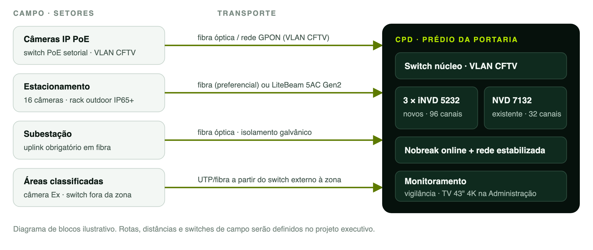

Resumo
Este documento apresenta o projeto técnico do sistema de circuito fechado de televisão (CFTV) da unidade de produção de biodiesel da Binatural em Formosa, Goiás. O projeto tem como base o Padrão Técnico Corporativo de CFTV da Binatural (BIN-PTC-CFTV-001, revisão 00), que define, para todas as unidades da empresa, os critérios de classificação dos ambientes por criticidade e iluminação, os padrões de câmera, a especificação de cada tipologia de área, o método de dimensionamento da gravação e os requisitos de rede, energia, privacidade, instalação e manutenção. Esses critérios não são repetidos aqui: este documento registra a aplicação do padrão à unidade, com a identificação da unidade, o diagnóstico da situação atual, o enquadramento dos setores nas tipologias, o memorial descritivo por setor, o quadro quantitativo, o dimensionamento da gravação e do armazenamento, a infraestrutura, o monitoramento e a lista preliminar de equipamentos e materiais. O sistema final previsto tem 111 câmeras, das quais 89 novas, com retenção mínima de 30 dias. As seções citadas ao longo do texto referem-se ao padrão BIN-PTC-CFTV-001, que deve ser consultado em conjunto com este projeto.
Palavras-chave: CFTV; videomonitoramento; projeto técnico; biodiesel; Formosa; padrão corporativo.
Apêndice A – Aplicação do padrão na unidade de Formosa/GO
Este apêndice registra a aplicação do Padrão Técnico Corporativo de CFTV (BIN-PTC-CFTV-001) à unidade de produção de biodiesel da Binatural em Formosa, Goiás. Segue o roteiro da seção 18 e constitui o projeto técnico da unidade, código AMC-BIN-FSA-CFTV-PT-001, revisão 00. Os critérios, especificações e justificativas gerais estão no corpo do padrão e não são repetidos; aqui constam apenas as informações específicas da unidade.
Identificação da unidade
Quadro 1 – Identificação da unidade de Formosa/GO
| Unidade | Binatural · Usina de produção de biodiesel |
| Local | Formosa, Goiás |
| Código da unidade | FSA |
| Projeto | AMC-BIN-FSA-CFTV-PT-001 · Revisão 00 |
| Setores levantados | 17 setores |
| Premissas | Retenção mínima de 30 dias; bitrate de referência de 1.024 kbps; gravadores no CPD do prédio da portaria; integração à rede óptica GPON em implantação na unidade, em VLAN dedicada ao CFTV. |
| Documentos pendentes | Estudo de classificação de áreas da unidade; inventário conciliado do CFTV existente. |
Fonte: elaborado pela A+.com Engenharia e Tecnologia (2026).
Diagnóstico da situação atual
O sistema começou analógico e migrou gradualmente para IP. Convivem hoje câmeras analógicas, câmeras IP e gravadores híbridos, sem padrão único de tecnologia e com setores sem cobertura.
Tabela 1 – Gravadores instalados e destino no projeto
| Equipamento | Qtd. | Tipo | Câmeras | Destino |
|---|---|---|---|---|
| MHDX 3116 | 1 | Híbrido (analógico HD e IP) | 16 | Substituir |
| MHDX 3116 | 1 | Híbrido (analógico HD e IP) | 19 | Substituir |
| NVD 7132 | 1 | NVR IP, 32 canais | 25 | Manter |
Fonte: elaborado pela A+.com Engenharia e Tecnologia (2026).
Tabela 2 – Câmeras existentes por setor no levantamento
| Setor | Situação atual | Câmeras |
|---|---|---|
| Estacionamento de funcionários | Não há CFTV instalado no setor. | – |
| Sala dos motoristas | 01 rack e 06 câmeras, sendo 01 com defeito. | 6 |
| Pátio e estacionamento externo de caminhões | Somente posteação com refletores e 03 câmeras ligadas ao rack da sala dos motoristas. | 3 |
| Prédio da portaria (vigilantes, CPD, TI e RH) | 06 câmeras analógicas e 02 câmeras IP. | 8 |
| Almoxarifado | 01 câmera analógica e 02 câmeras IP. | 3 |
| PCC e sala de reuniões | Não informada no levantamento. | – |
| Oficina | 02 câmeras. | 2 |
| Caldeira WAD | 03 câmeras. | 3 |
| Caldeira SECAMAQ | 01 câmera. | 1 |
| Administração | 05 câmeras analógicas e 01 câmera IP. | 6 |
| Diretoria | Não informada no levantamento. | – |
| Coordenação | Não informada no levantamento. | – |
| Balança | 01 câmera analógica. | 1 |
| Subestação | Não informada no levantamento. | – |
| Laboratório | Não informada no levantamento. | – |
| Supervisório | 01 câmera analógica. | 1 |
| Carregamento | 03 câmeras. | 3 |
| Total levantado | 14 analógicas e 47 IP | 60 |
Fonte: elaborado pela A+.com Engenharia e Tecnologia (2026).
Foram identificados os seguintes problemas e não conformidades em relação ao padrão:
- 14 câmeras analógicas em operação, em desacordo com a diretriz de arquitetura 100% IP e dependentes dos gravadores híbridos;
- Setores sem cobertura: estacionamento de funcionários, subestação, laboratório, diretoria e coordenação;
- Pátio de caminhões com estrutura precária: posteação de refletores e apenas 03 câmeras;
- Ausência de analíticos de perímetro e de câmeras termográficas em planta que manipula inflamáveis;
- Câmera com defeito na sala dos motoristas;
Enquadramento dos setores nas tipologias
Quadro 2 – Enquadramento dos setores da unidade nas tipologias do padrão
| Setor | Tipologia aplicada (seção) | Criticidade |
|---|---|---|
| Estacionamento de funcionários | Estacionamento de funcionários (7.6); Perímetro da planta (7.19) | C3 |
| Sala dos motoristas | Pátio de caminhões e sala de motoristas (7.7) | C3 |
| Pátio e estacionamento externo de caminhões | Pátio de caminhões e sala de motoristas (7.7); Perímetro da planta (7.19) | C3 |
| Prédio da portaria (vigilantes, CPD, TI e RH) | Portaria, guarita e controle de acesso (7.4); CPD e salas de TI e telecomunicações (7.5); Áreas administrativas (7.2) | C3/C4 |
| Almoxarifado | Almoxarifado (7.9) | C3 |
| PCC e sala de reuniões | Áreas administrativas (7.2) | C1/C2 |
| Oficina | Oficina de manutenção (7.10) | C2 |
| Caldeira WAD | Caldeiras e geração de vapor (áreas de calor) (7.11) | C4 |
| Caldeira SECAMAQ | Caldeiras e geração de vapor (áreas de calor) (7.11) | C4 |
| Administração | Áreas administrativas (7.2); Recepções e circulações internas (7.3) | C1/C2 |
| Diretoria | Áreas administrativas (7.2) | C1 |
| Coordenação | Áreas administrativas (7.2) | C1 |
| Balança | Balança (7.8) | C3 |
| Subestação | Subestação e salas elétricas (7.13) | C4 |
| Laboratório | Laboratório de controle de qualidade (7.14) | C3 |
| Supervisório | Sala de controle e supervisório (7.15) | C4 |
| Carregamento | Carregamento e descarregamento de produtos (7.18) | C4 |
Fonte: elaborado pela A+.com Engenharia e Tecnologia (2026).
Memorial por setor
Para cada setor apresentam-se a situação atual, as quantidades por padrão e a justificativa específica. “Atual” é a quantidade levantada; “final” é a quantidade após a execução; câmeras novas são a soma das substituições e das adições.
A.4.1 Estacionamento de funcionários
Situação atual: Não há CFTV instalado no setor. Atual: 0 · Substituir: 0 · Adicionar: 16 · Final: 16
Tabela 3 – Câmeras novas – Estacionamento de funcionários
| Qtd. | Padrão | Aplicação |
|---|---|---|
| 12 | T3 · Full Color 2 MP com IA | Vagas, corredores de circulação e acessos de pedestres |
| 04 | T3 · Full Color 2 MP com IA | Limite do terreno, com analítico de cerca virtual |
Fonte: elaborado pela A+.com Engenharia e Tecnologia (2026).
Setor hoje sem cobertura, com circulação de pessoas e veículos também à noite. Aplica-se integralmente a tipologia de estacionamento: Full Color com IA em todos os pontos e cerca virtual no limite do terreno.
Observações específicas do setor:
- Rack outdoor no setor, com switch PoE de temperatura estendida (seção 11.2);
- Uplink até o CPD por fibra óptica (preferencial) ou por enlace de rádio Ubiquiti LiteBeam 5AC Gen2;
- Câmeras em postes metálicos galvanizados dedicados, de 4 m a 6 m, com aterramento e DPS;
- Opcional, não contabilizado: câmera LPR no acesso de veículos.
A.4.2 Sala dos motoristas
Situação atual: 01 rack e 06 câmeras, sendo 01 com defeito. Atual: 6 · Substituir: 1 · Adicionar: 5 · Final: 11
Tabela 4 – Câmeras novas – Sala dos motoristas
| Qtd. | Padrão | Aplicação |
|---|---|---|
| 01 | T2 · Série 3000 · IR 2 MP | Substituição da câmera com defeito, na mesma posição |
| 02 | T2 · Série 3000 · IR 2 MP | Área de espera e balcão de atendimento |
| 03 | T3 · Full Color 2 MP com IA | Fachada, acesso dos motoristas e ligação com o pátio de caminhões |
Fonte: elaborado pela A+.com Engenharia e Tecnologia (2026).
Ambiente de permanência de motoristas terceiros, com fluxo intenso e rotativo. Internamente adota-se o padrão T2, que trata a contraluz de portas e janelas; nas faces externas, Full Color.
Observações específicas do setor:
- O rack da sala concentra também as câmeras do pátio de caminhões: verificar portas PoE livres, orçamento de potência PoE e estado do nobreak;
- A câmera substituída deve ser identificada e entregue à Binatural.
A.4.3 Pátio e estacionamento externo de caminhões
Situação atual: Somente posteação com refletores e 03 câmeras ligadas ao rack da sala dos motoristas. Atual: 3 · Substituir: 0 · Adicionar: 6 · Final: 9
Tabela 5 – Câmeras novas – Pátio e estacionamento externo de caminhões
| Qtd. | Padrão | Aplicação |
|---|---|---|
| 04 | T3 · Full Color 2 MP com IA | Vias de manobra, vagas e circulação de caminhões |
| 02 | T5 · Termográfica | Perímetro do pátio: intrusão e focos de calor, com cerca virtual |
Fonte: elaborado pela A+.com Engenharia e Tecnologia (2026).
Estrutura atual deficiente para a extensão do pátio e para a operação noturna. A expansão combina Full Color com IA nas vias e vagas e duas câmeras termográficas no perímetro.
Observações específicas do setor:
- Postes metálicos dedicados ao CFTV ou adequação dos postes dos refletores, com caixa hermética, circuito próprio, DPS e aterramento;
- Troca dos refletores por luminárias LED de distribuição homogênea, recomendada;
- Câmeras existentes de infravermelho convencional devem ser padronizadas em Full Color;
- Lances acima de 90 m em fibra óptica até switch de campo;
A.4.4 Prédio da portaria (vigilantes, CPD, TI e RH)
Situação atual: 06 câmeras analógicas e 02 câmeras IP. Atual: 8 · Substituir: 6 · Adicionar: 8 · Final: 16
Tabela 6 – Câmeras novas – Prédio da portaria
| Qtd. | Padrão | Aplicação |
|---|---|---|
| 02 | T2 · Série 3000 · IR 2 MP | CPD: 01 no acesso e 01 no corredor de racks |
| 07 | T2 · Série 3000 · IR 2 MP | Salas de vigilantes, TI e RH e circulações internas |
| 05 | T3 · Full Color 2 MP com IA | Fachada, portões de pedestres e de veículos, guarita e cancela |
Fonte: elaborado pela A+.com Engenharia e Tecnologia (2026).
Prédio de controle de acesso da planta e sede do CPD, onde ficarão os gravadores. As 06 câmeras analógicas são substituídas por câmeras IP, o que elimina a dependência dos gravadores híbridos. O CPD recebe as duas câmeras mínimas da tipologia; o RH, câmera apenas no acesso e no arquivo, conforme a tipologia de áreas administrativas.
Observações específicas do setor:
- Câmeras do RH e da TI enquadram acessos e circulação, sem captar telas e documentos com dados pessoais.
A.4.5 Almoxarifado
Situação atual: 01 câmera analógica e 02 câmeras IP. Atual: 3 · Substituir: 1 · Adicionar: 6 · Final: 9
Tabela 7 – Câmeras novas – Almoxarifado
| Qtd. | Padrão | Aplicação |
|---|---|---|
| 04 | T4 · Super Color 2 MP | Galpão de estoque: corredores de prateleiras e área de separação |
| 03 | T3 · Full Color 2 MP com IA | Carga e descarga e acessos externos |
Fonte: elaborado pela A+.com Engenharia e Tecnologia (2026).
Galpão com prateleiras altas e iluminação irregular: Super Color no galpão e Full Color na área de carga e descarga, conforme a tipologia.
A.4.6 PCM e sala de reuniões
Situação atual: Não informada no levantamento. Atual: 0 · Substituir: 0 · Adicionar: 4 · Final: 4
Tabela 8 – Câmeras novas – PCM e sala de reuniões
| Qtd. | Padrão | Aplicação |
|---|---|---|
| 03 | T2 · Série 3000 · IR 2 MP | Salas de trabalho e circulação do PCM |
| 01 | T1 · IR convencional 2 MP | Sala de reuniões anexa |
Fonte: elaborado pela A+.com Engenharia e Tecnologia (2026).
As salas de trabalho têm uso operacional e recebem o padrão T2; a sala de reuniões é ambiente C1 e recebe o padrão mínimo T1.
A.4.7 Oficina
Situação atual: 02 câmeras. Atual: 2 · Substituir: 0 · Adicionar: 2 · Final: 4
Tabela 9 – Câmeras novas – Oficina
| Qtd. | Padrão | Aplicação |
|---|---|---|
| 02 | T4 · Super Color 2 MP | Bancadas, área de máquinas e acesso de veículos e equipamentos |
Fonte: elaborado pela A+.com Engenharia e Tecnologia (2026).
Ambiente com muitos equipamentos, sombras e iluminação localizada: Super Color, conforme a tipologia.
A.4.8 Caldeira WAD
Situação atual: 03 câmeras. Atual: 3 · Substituir: 0 · Adicionar: 6 · Final: 9
Tabela 10 – Câmeras novas – Caldeira WAD
| Qtd. | Padrão | Aplicação |
|---|---|---|
| 04 | T4 · Super Color 2 MP | Frente da caldeira, painel local, alimentação de combustível e circulação |
| 01 | T5 · Termográfica | Pátio ou silo de combustível e região da fornalha: focos de calor |
| 01 | T3 · Full Color 2 MP com IA | Acesso e entorno externo da casa de caldeira |
Fonte: elaborado pela A+.com Engenharia e Tecnologia (2026).
Área de calor crítica para a operação. Super Color nas áreas operacionais e câmera termográfica sobre o estoque de lenha e a fornalha, conforme a tipologia de caldeiras.
Observações específicas do setor:
- Medir a temperatura nos pontos de instalação e manter distância de superfícies quentes e saídas de gases;
- Usar caixas de proteção e cabos com isolação compatível com a temperatura do local.
A.4.9 Caldeira SECAMAQ
Situação atual: 01 câmera. Atual: 1 · Substituir: 0 · Adicionar: 2 · Final: 3
Tabela 11 – Câmeras novas – Caldeira SECAMAQ
| Qtd. | Padrão | Aplicação |
|---|---|---|
| 02 | T4 · Super Color 2 MP | Frente da caldeira, painel local e alimentação de lenha |
Fonte: elaborado pela A+.com Engenharia e Tecnologia (2026).
Mesmo perfil da Caldeira WAD: Super Color nas áreas operacionais.
Observações específicas do setor:
- Avaliar na vistoria a inclusão de câmera termográfica para o estoque de lenha, como na Caldeira WAD.
A.4.10 Administração
Situação atual: 05 câmeras analógicas e 01 câmera IP. Atual: 6 · Substituir: 5 · Adicionar: 5 · Final: 11
Tabela 12 – Câmeras novas – Administração
| Qtd. | Padrão | Aplicação |
|---|---|---|
| 04 | T2 · Série 3000 · IR 2 MP | Recepção, circulações e acessos internos |
| 04 | T1 · IR convencional 2 MP | Salas administrativas |
| 02 | T3 · Full Color 2 MP com IA | Fachada e acessos externos do prédio |
Fonte: elaborado pela A+.com Engenharia e Tecnologia (2026).
Salas administrativas com o padrão mínimo T1; recepção e circulações com T2, pela contraluz das portas de vidro; fachada em Full Color.
Observações específicas do setor:
- Instalação de TV de no mínimo 43 polegadas, 4K, para visualização dos setores em mosaico (A.8).
A.4.11 Diretoria
Situação atual: Não informada no levantamento. Atual: 0 · Substituir: 0 · Adicionar: 1 · Final: 1
Tabela 13 – Câmeras novas – Diretoria
| Qtd. | Padrão | Aplicação |
|---|---|---|
| 01 | T1 · IR convencional 2 MP | Acesso e circulação da diretoria |
Fonte: elaborado pela A+.com Engenharia e Tecnologia (2026).
Ambiente C1: padrão mínimo, enquadrando o acesso e não a área de trabalho.
A.4.12 Coordenação
Situação atual: Não informada no levantamento. Atual: 0 · Substituir: 0 · Adicionar: 1 · Final: 1
Tabela 14 – Câmeras novas – Coordenação
| Qtd. | Padrão | Aplicação |
|---|---|---|
| 01 | T1 · IR convencional 2 MP | Acesso e circulação da coordenação |
Fonte: elaborado pela A+.com Engenharia e Tecnologia (2026).
Mesmo critério da diretoria: padrão mínimo no acesso.
A.4.13 Balança
Situação atual: 01 câmera analógica. Atual: 1 · Substituir: 1 · Adicionar: 0 · Final: 1
Tabela 15 – Câmeras novas – Balança
| Qtd. | Padrão | Aplicação |
|---|---|---|
| 01 | T3 · Full Color 2 MP com IA | Plataforma da balança e veículo em pesagem |
Fonte: elaborado pela A+.com Engenharia e Tecnologia (2026).
Ponto de controle fiscal com operação noturna. A câmera analógica é substituída por Full Color com IA.
Observações específicas do setor:
- Recomendação não contabilizada: 01 câmera LPR e 01 câmera de vista superior da carroceria, conforme a tipologia.
A.4.14 Subestação
Situação atual: Não informada no levantamento. Atual: 0 · Substituir: 0 · Adicionar: 5 · Final: 5
Tabela 16 – Câmeras novas – Subestação
| Qtd. | Padrão | Aplicação |
|---|---|---|
| 02 | T2 · Série 3000 · IR 2 MP | Interior: sala de painéis e cubículos |
| 02 | T3 · Full Color 2 MP com IA | Exterior: transformadores e portão de acesso, com cerca virtual |
| 01 | T5 · Termográfica | Transformadores e barramentos: pontos quentes |
Fonte: elaborado pela A+.com Engenharia e Tecnologia (2026).
Aplicação integral da tipologia de subestação: cobertura interna e externa e termografia dos transformadores.
Observações específicas do setor:
- Instalação conforme NR-10 e ABNT NBR 14039;
- Uplink obrigatório em fibra óptica e DPS na alimentação e nos dados.
A.4.15 Laboratório
Situação atual: Não informada no levantamento. Atual: 0 · Substituir: 0 · Adicionar: 5 · Final: 5
Tabela 17 – Câmeras novas – Laboratório
| Qtd. | Padrão | Aplicação |
|---|---|---|
| 05 | T2 · Série 3000 · IR 2 MP | Bancadas de análise, recebimento e guarda de amostras e acesso |
Fonte: elaborado pela A+.com Engenharia e Tecnologia (2026).
Rastreabilidade das análises e cadeia de custódia das amostras-testemunho: padrão T2, conforme a tipologia.
A.4.16 Supervisório
Situação atual: 01 câmera analógica. Atual: 1 · Substituir: 1 · Adicionar: 1 · Final: 2
Tabela 18 – Câmeras novas – Supervisório
| Qtd. | Padrão | Aplicação |
|---|---|---|
| 01 | T2 · Série 3000 · IR 2 MP | Substituição da câmera analógica: acesso à sala |
| 01 | T6 · Fisheye 360° | Fisheye 8 MP no teto: telas de supervisão e ambiente geral |
Fonte: elaborado pela A+.com Engenharia e Tecnologia (2026).
Aplicação integral da tipologia: câmera de acesso T2 e fisheye no teto.
Observações específicas do setor:
- A fisheye de 8 MP foi calculada a 4.096 kbps (A.6).
A.4.17 Carregamento
Situação atual: 03 câmeras. Atual: 3 · Substituir: 0 · Adicionar: 1 · Final: 4
Tabela 19 – Câmeras novas – Carregamento
| Qtd. | Padrão | Aplicação |
|---|---|---|
| 01 | T7 · Antiexplosão (Ex) | Plataforma de carregamento (Ex, se a posição estiver em zona classificada) |
Fonte: elaborado pela A+.com Engenharia e Tecnologia (2026).
Área potencialmente classificada. Se a posição estiver em zona classificada, aplica-se o padrão T7; fora dela, Super Color, conforme a tipologia de carregamento.
Observações específicas do setor:
- Verificar se as 03 câmeras existentes estão dentro de zona classificada sem certificação Ex; nesse caso, devem ser relocadas ou substituídas.
Quadro quantitativo
Tabela 20 – Câmeras por setor e por padrão – Formosa/GO
| Setor | Atual | Subst. | Adic. | Final | T1 | T2 | T3 | T4 | T5 | T6 | T7 | Novas |
|---|---|---|---|---|---|---|---|---|---|---|---|---|
| Estacionamento de funcionários | 0 | 0 | 16 | 16 | 16 | 16 | ||||||
| Sala dos motoristas | 6 | 1 | 5 | 11 | 3 | 3 | 6 | |||||
| Pátio e estacionamento externo de caminhões | 3 | 0 | 6 | 9 | 4 | 2 | 6 | |||||
| Prédio da portaria | 8 | 6 | 8 | 16 | 9 | 5 | 14 | |||||
| Almoxarifado | 3 | 1 | 6 | 9 | 3 | 4 | 7 | |||||
| PCC e sala de reuniões | 0 | 0 | 4 | 4 | 1 | 3 | 4 | |||||
| Oficina | 2 | 0 | 2 | 4 | 2 | 2 | ||||||
| Caldeira WAD | 3 | 0 | 6 | 9 | 1 | 4 | 1 | 6 | ||||
| Caldeira SECAMAQ | 1 | 0 | 2 | 3 | 2 | 2 | ||||||
| Administração | 6 | 5 | 5 | 11 | 4 | 4 | 2 | 10 | ||||
| Diretoria | 0 | 0 | 1 | 1 | 1 | 1 | ||||||
| Coordenação | 0 | 0 | 1 | 1 | 1 | 1 | ||||||
| Balança | 1 | 1 | 0 | 1 | 1 | 1 | ||||||
| Subestação | 0 | 0 | 5 | 5 | 2 | 2 | 1 | 5 | ||||
| Laboratório | 0 | 0 | 5 | 5 | 5 | 5 | ||||||
| Supervisório | 1 | 1 | 1 | 2 | 1 | 1 | 2 | |||||
| Carregamento | 3 | 0 | 1 | 4 | 1 | 1 | ||||||
| Total | 37 | 15 | 74 | 111 | 7 | 27 | 37 | 12 | 4 | 1 | 1 | 89 |
Fonte: elaborado pela A+.com Engenharia e Tecnologia (2026).
O sistema final terá 111 câmeras, das quais 89 novas: 15 substituições e 74 adições. Por padrão: T1, 7; T2, 27; T3, 37; T4, 12; T5, 4; T6, 1; T7, 1.
Gravação e armazenamento
Os 02 gravadores híbridos MHDX 3116 devem ser substituídos por 03 gravadores iNVD 5232 novos; o NVD 7132 existente é mantido. São 128 canais para 111 câmeras, com 17 canais de reserva (13,3%), acima do mínimo de 10% do padrão. Aplicando o método da seção 10.2:
Tabela 21 – Cálculo de armazenamento – Formosa/GO
| Etapa | Resultado |
|---|---|
| Taxa por câmera | 1.024 kbps = 1,024 Mb/s |
| Por dia | 1,024 Mb/s × 86.400 s ÷ 8 = 11,06 GB |
| Em 30 dias | 11,06 GB × 30 = 331,78 GB por câmera |
| Sistema completo (2 MP) | 111 × 331,78 GB = 36,83 TB |
| Acréscimo da fisheye a 4.096 kbps | 1,00 TB |
| Total com margem de 20% | 45,39 TB |
Fonte: elaborado pela A+.com Engenharia e Tecnologia (2026).
Tabela 22 – Distribuição das câmeras por gravador – Formosa/GO
| Gravador | Modelo | Setores | Canais | 30 dias | +20% | Discos |
|---|---|---|---|---|---|---|
| FSA-NVR-01 | iNVD 5232 (novo) | Prédio da portaria, Sala dos motoristas, Balança | 28/32 | 9,29 TB | 11,15 TB | 2 × 8 TB |
| FSA-NVR-02 | iNVD 5232 (novo) | Estacionamento de funcionários, Pátio e estacionamento externo de caminhões | 25/32 | 8,29 TB | 9,95 TB | 2 × 8 TB |
| FSA-NVR-03 | iNVD 5232 (novo) | Administração, Diretoria, Coordenação, Almoxarifado, PCC e sala de reuniões, Oficina | 30/32 | 9,95 TB | 11,94 TB | 2 × 8 TB |
| FSA-NVR-04 | NVD 7132 (existente) | Caldeira WAD, Caldeira SECAMAQ, Subestação, Laboratório, Supervisório, Carregamento | 28/32 | 10,29 TB | 12,34 TB | 2 × 8 TB |
| Total | 4 gravadores | 17 setores | 111/128 | 37,82 TB | 45,39 TB | 8 × 8 TB |
Fonte: elaborado pela A+.com Engenharia e Tecnologia (2026).
Cada gravador recebe no mínimo 2 discos de 8 TB da linha de vigilância: 16 TB nominais, cerca de 14,4 TB úteis, o que atende inclusive à ocupação total dos 32 canais (12,74 TB com margem). As câmeras do perímetro estão distribuídas nos gravadores FSA-NVR-02 e FSA-NVR-04, conforme a seção 10.3. As câmeras termográficas de referência devem ser verificadas quanto à ocupação de um ou dois canais; a reserva de 17 canais absorve a diferença.
Infraestrutura da unidade
A figura a seguir apresenta o diagrama de blocos da solução na unidade. Rotas, distâncias e switches de campo serão definidos no projeto executivo.
Figura 1 – Diagrama de blocos do CFTV da unidade de Formosa/GO

Fonte: elaborado pela A+.com Engenharia e Tecnologia (2026).
As condições específicas de infraestrutura da unidade são as seguintes:
- Estacionamento de funcionários: Rack outdoor IP65 com switch PoE, atendendo 16 câmeras; uplink por fibra óptica ou, alternativamente, por 02 rádios Ubiquiti LiteBeam 5AC Gen2, com tráfego estimado de 20 Mb/s;
- Sala dos motoristas: Rack existente atende também o pátio de caminhões; verificar portas PoE, orçamento de potência e nobreak;
- Subestação: uplink em fibra óptica;
- Rede: VLAN de CFTV na rede óptica GPON em implantação na unidade; tráfego de cerca de 32 Mb/s por gravador;
- CPD: 03 iNVD 5232 novos e NVD 7132 existente, com nobreak online e rede estabilizada.
Monitoramento
- Administração: TV de no mínimo 43 polegadas, 4K, em suporte de parede, alimentada por decodificador IP ou mini-PC na VLAN do CFTV, para visualização dos setores em mosaico;
- Portaria: Estação de monitoramento na sala dos vigilantes, com recebimento dos alarmes de cerca virtual e das câmeras termográficas.
Equipamentos e materiais
Quadro 3 – Lista preliminar de equipamentos e materiais – Formosa/GO
| Qtd. | Item | Aplicação |
|---|---|---|
| Câmeras | ||
| 07 | Câmera IP 2 MP IR convencional (padrão T1, ref. VIP 1230) | Salas de baixa criticidade |
| 27 | Câmera IP 2 MP série 3000 (padrão T2, ref. VIP 3230) | Áreas internas operacionais |
| 37 | Câmera IP 2 MP Full Color com IA (padrão T3) | Áreas externas |
| 12 | Câmera IP 2 MP Super Color (padrão T4) | Almoxarifado, oficina e caldeiras |
| 04 | Câmera termográfica (padrão T5, ref. VIP 5203) | Pátio, subestação e caldeira |
| 01 | Câmera fisheye 8 MP (padrão T6) | Supervisório |
| 01 | Câmera Ex certificada INMETRO ou câmera IP em invólucro Ex d (padrão T7) | Carregamento; demais conforme estudo |
| Gravação e visualização | ||
| 03 | Gravador iNVD 5232, 32 canais IP, série 5000 | CPD |
| 06 | Disco rígido 8 TB, linha de vigilância | Gravadores novos |
| A definir | Disco rígido 8 TB, linha de vigilância | NVD 7132 existente, após verificação |
| 01 | TV 43 polegadas 4K com suporte de parede | Administração |
| 01 | Decodificador IP ou mini-PC com software de gestão | Administração |
| Rede e infraestrutura | ||
| 01 | Rack outdoor IP65 com ventilação, DPS, aterramento e nobreak | Estacionamento de funcionários |
| 02 | Rádio Ubiquiti LiteBeam 5AC Gen2 (LBE-5AC-Gen2-BR) | Alternativa ao uplink em fibra |
| A definir | Switches PoE setoriais e switch PoE industrial | Conforme vistoria |
| A definir | Cabo óptico monomodo, DIO, cordões e módulos SFP | Uplinks |
| A definir | Cabo UTP categoria 6 (interno e externo), conectores e patch cords | Pontos de câmera |
| A definir | Eletrodutos, conduletes, caixas herméticas e fixações | Infraestrutura |
| A definir | Postes metálicos galvanizados com aterramento | Estacionamento e pátio |
| A definir | DPS de energia e de dados | Pontos externos e racks |
| 01 | Nobreak online para o CPD ou ampliação do existente | CPD |
Fonte: elaborado pela A+.com Engenharia e Tecnologia (2026).